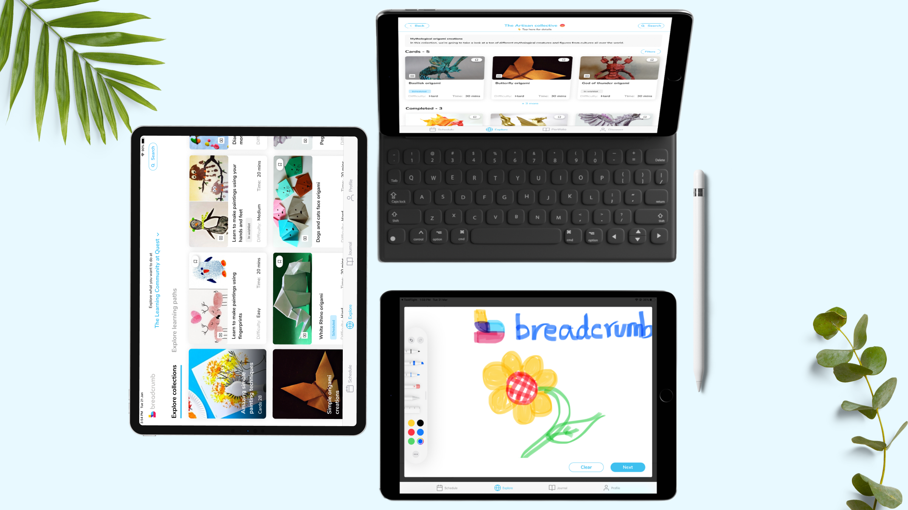
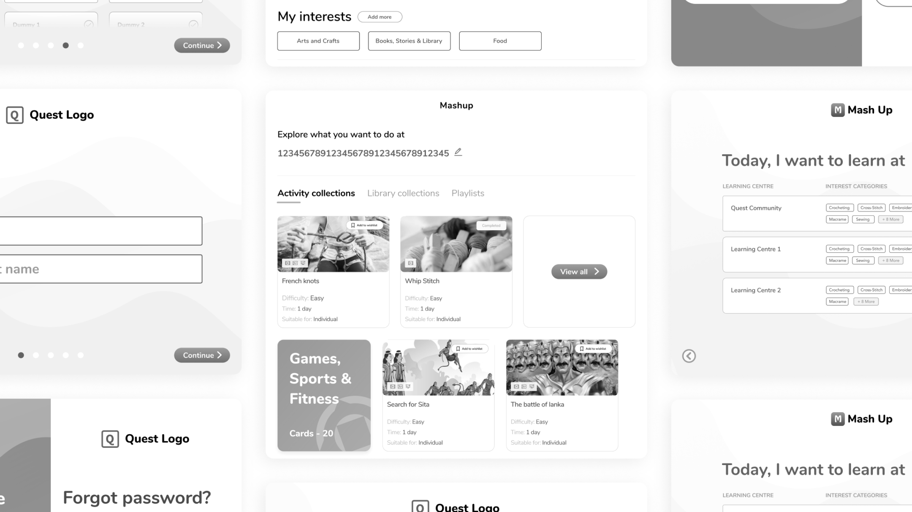
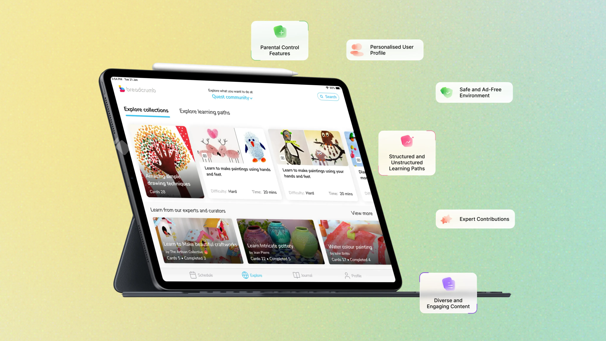
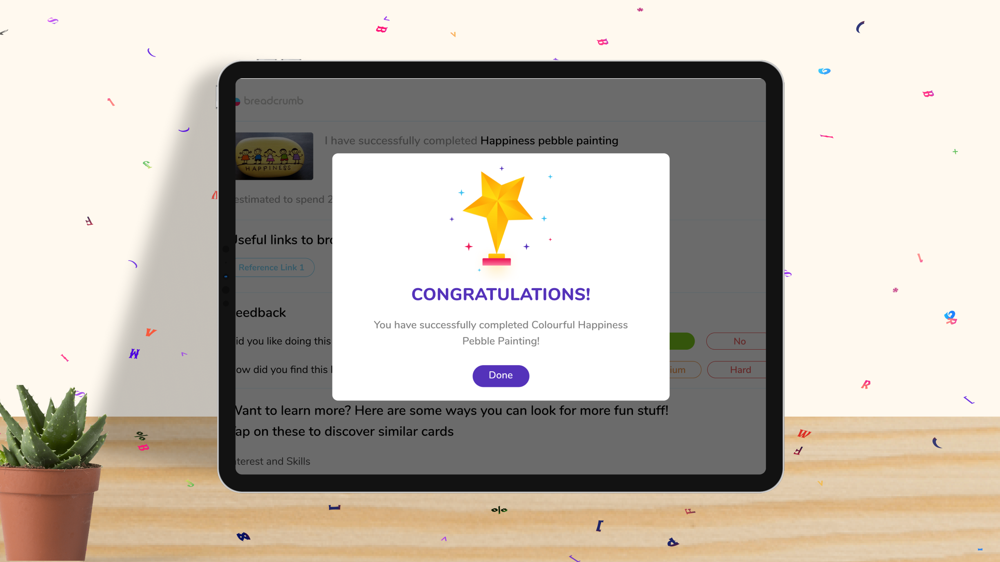
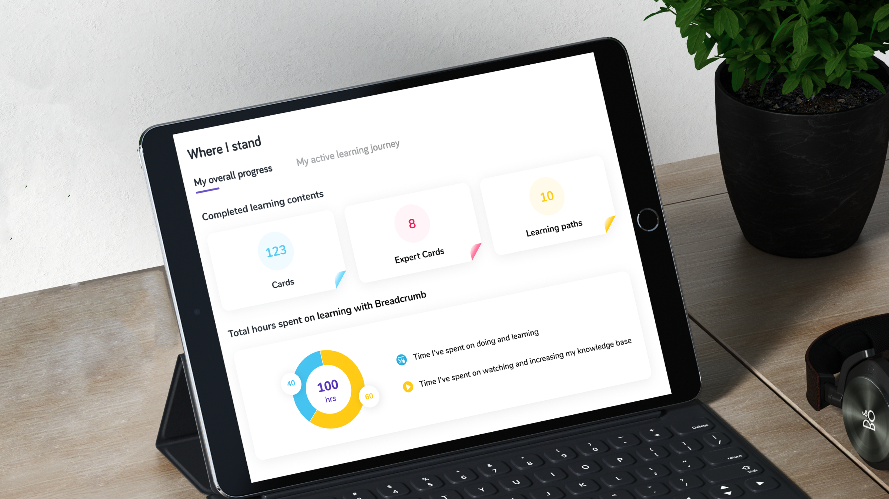
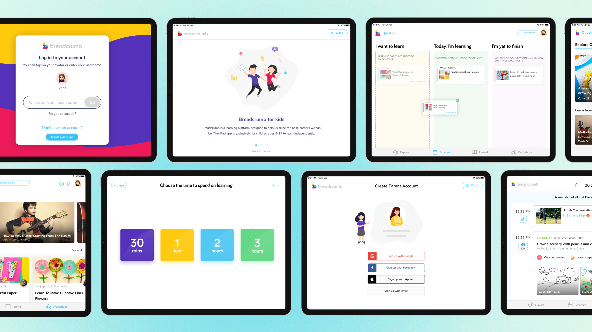

Overview
Breadcrumb takes its name from how it works. Rather than dumping the whole internet on a child, it leaves a trail of curated, age-appropriate "crumbs" a child can follow at their own pace, toward goals they choose for themselves. It's a self-directed learning app for kids aged 4+, built on a simple belief: children are born curious. The job isn't to direct them, but to give them a safe trail to follow.
I came in at the idea stage and shaped the product 0→1: research, IA, interaction and UI, across an iPad app for children and a companion web app for parents.
The problem
For parents, the open internet is an overwhelming, unsafe place to set a child loose. For kids, most "educational" apps prescribe a fixed path and quietly strip away the autonomy that makes learning stick. Breadcrumb had to hold both at once: real freedom for the child, real safety and oversight for the parent, without either one cancelling the other.
"Self-directed learning does not mean no adult involvement. It means no adult force or control." Carol Black · a principle that anchored the design

Research
Breadcrumb has two users with very different needs, so I researched both. With children, the question was what keeps them exploring on their own; with parents, it was what earns enough trust to hand over the iPad. Mapping those side by side set the guardrails for every decision that followed.
I grounded the work in three inputs:
Parent conversations
How children already learn at home, and what would earn a parent's trust.
Field observation
How young kids behave when given choice versus instruction.
Learning theory
Self-directed learning and Gardner's Multiple Intelligences.

Four insights shaped everything that came after
Choice is the engagement
Children stay with learning when they pick it; the moment it feels assigned, attention drops. Lead with discovery, not a syllabus.
Parents want to see, not steer
Trust came from visibility, not lockdown: oversight and the option to step in, without running the session.
Abundance is its own problem
An open internet of "educational" content overwhelms parents and isn't safe. The value was curation, not more content.
One size fits no child
Kids gravitate to different activities, so content had to span many intelligences, letting structured and exploratory learners both find a way in.
Approach
The research pointed to a handful of non-negotiables. I turned them into design principles: the rules every screen had to answer to.
- Discovery over instruction. Never tell a child what to learn; design the moment of choosing.
- Visibility over control. Earn a parent's trust by showing what's happening, not by locking the child out.
- Curate, don't accumulate. A small, safe, handpicked library beats infinite content.
- Many ways in. Design for different kinds of learners, and make every win feel encouraging, never ranked.
Wireframes
With the principles set, I worked the structure out in low fidelity first: how Explore, Schedule and Journal fit together, how a child moves between discovering and doing, and where safety cues and parental controls live. Big tap targets, few choices per screen, and an obvious sense of what's next.

The solution
From those wireframes, the product came together as four connected modes, a layer of delight to keep kids coming back, and the safety scaffolding parents needed to trust it.
Designing for self-direction
The product is built around four simple modes a child moves between freely:
Explore
Browse curated Collections, or follow a Suggested Learning Path when a child wants more structure: open discovery and gentle guidance in one place.
Schedule
Children set their own learning intentions for the day, taking ownership of what they'll do.
Journal
A space to reflect on what they explored, turning activity into a felt sense of progress.
Workshops
Live workshops a child can flag with one tap. A parent books it on the web, then it returns to the iPad to attend.
Content spans a Multiple Intelligences range (from origami to STEM to body percussion), so different kinds of learners each find their own way in, and progress is shown to motivate, never to rank.

Designing for delight
Self-direction only works if a child wants to come back. So I built in small moments of encouragement, making the app feel personal, playful, and worth returning to.
Memoji profiles
Kids pick a Memoji for their profile: a small act of ownership that makes the space feel like theirs.
Confetti, every time
Milestones trigger celebratory pop-ups (each with its own style and confetti), so progress always feels worth a cheer.
Apple Pencil journaling
Journaling runs on PencilKit, so kids draw and write by hand. Reflection becomes something they actually enjoy.
Progress they can see
Each child's profile shows how far they've come, turning effort into a visible, motivating record.

Designing for trust & safety
Safety is the whole product, so it had to be visible, not buried in settings.
Distraction-free content
A curated, ad-free library (2,750+ cards) with a calm video interface: no autoplay, no algorithmic rabbit holes.
Profiles per child
Each child gets a passcode-protected profile, so siblings learn at their own level.
A parent dashboard
Parents oversee exploration and manage screen time from the browser, present and in control, without taking over.
Activity checklists
Materials and supervision needs are flagged up front, so an adult can prep and step in only where needed.
Bridging parent and child
Breadcrumb is really two products in one: a child's iPad app and a parent's web portal. The craft was connecting them so a parent stays in control without ever getting in the child's way.
Onboarding adapts to who starts
Onboarding flexes to whoever opens the app. If a child taps "I'm a learner," they set up their own profile first, then a parent account is added. If a parent starts, they set up first, then hand the iPad over. Either path ends the same way, with a child profile linked to a parent, so oversight is built in from the very first launch.
The parent watches from their portal
From the web portal, parents follow their child's progress and notice what they keep coming back to, turning oversight into genuine insight about a child's interests.

Final UI
The visual language is calm and friendly, soft, age-appropriate and accessible, so the app feels like a safe space, not a toy fighting for attention. Colour and iconography carry the safety cues, and progress is celebrated gently rather than scored.

Outcome
Breadcrumb shipped as a live iPad app on the App Store, with a companion web app for parents. Of everything we built, the workshop hand-off resonated most with parents. It proved the "freedom for the child, control for the parent" bet had paid off.